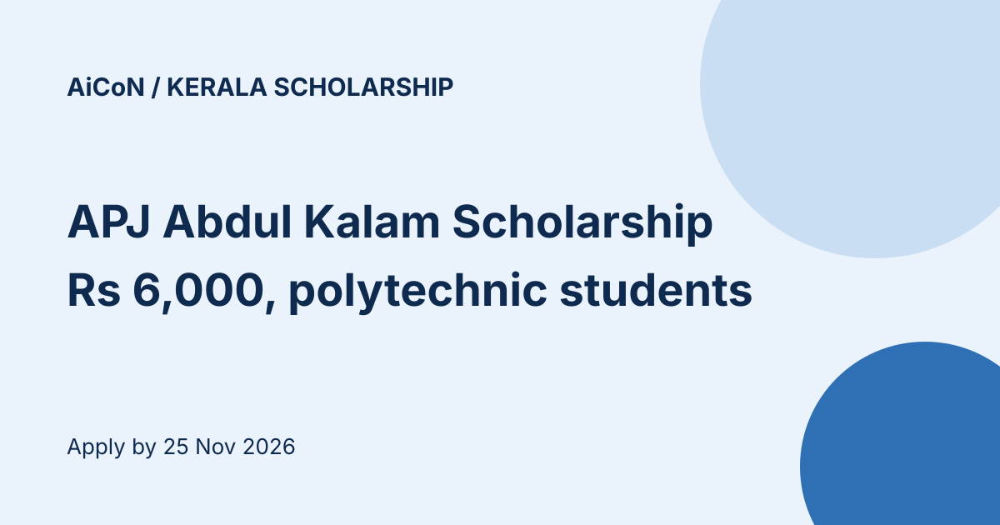

Kerala APJ Abdul Kalam Scholarship 2026-27: ₹6,000 for minority polytechnic students, apply by 25 November
The Kerala Directorate of Minority Welfare is taking applications for the A.P.J. Abdul Kalam Scholarship 2026-27: ₹6,000 for minority-community students in the second and third year of a three-year polytechnic diploma. The notice is dated 12 October 2026. The online last date is 25 November 2026.

At a glance
- Amount: ₹6,000, one time only
- Who: permanent Kerala residents from the Muslim, Christian (all denominations), Sikh, Buddhist, Jain or Parsi communities
- Course: three-year diploma in a government, aided or government-approved self-financing polytechnic in Kerala, admitted on merit seat. Second-year and third-year students are considered
- Online last date: 25 November 2026
Eligibility
- Families below the poverty line (BPL) get preference. If there are no BPL applicants, APL families with annual income up to ₹8 lakh are considered
- 30% of scholarships are reserved for girls. If there are not enough eligible girls, eligible boys can be considered
- The student needs a bank account in their own name in a scheduled commercial bank
How to apply
- Go to mwdscholarship.kerala.gov.in and choose One-time registration
- Register with name, Aadhaar and phone number, then log in
- Complete the profile (personal, bank and institution details) and add earlier qualifications through Add Qualification
- Choose Apply For Scholarship and pick this scholarship
- Upload photo, signature, SSLC certificate, income certificate, bank passbook and allotment memo, then submit
- Check the status under Submitted Applications
Documents to give your institution
- Online registration printout
- Mark lists (SSLC, Plus Two or VHSE and similar)
- Allotment memo
- First page of the student's own bank passbook with name, account number, branch code and branch address
- Aadhaar copy, nativity certificate, community or minority certificate, village-office income certificate, ration card copy
Check your bank details yourself. If a wrong detail leads to rejection, the department is not responsible.
Dates for the application journey
- 25 November 2026: last date for students to apply online
- 28 November 2026: last date to submit the printout and documents to the institution head
- 30 November 2026: institution's deadline to verify and approve online
- 5 December 2026: self-financing polytechnics must get approved applications to the Directorate (Vikas Bhavan, Thiruvananthapuram 695033) by this date
Helpline: 0471-2300523, 0471-2300524.
We read the portal home page and the 4-page notice (a Malayalam PDF, read as page images) on 14 October 2026. We did not register or open the application form.
Sources: Minority Welfare scholarship portal, Notice for APJ Abdul Kalam Scholarship 2026-27 (PDF). Checked 14 October 2026. This is an AiCoN explainer, not a government publication.